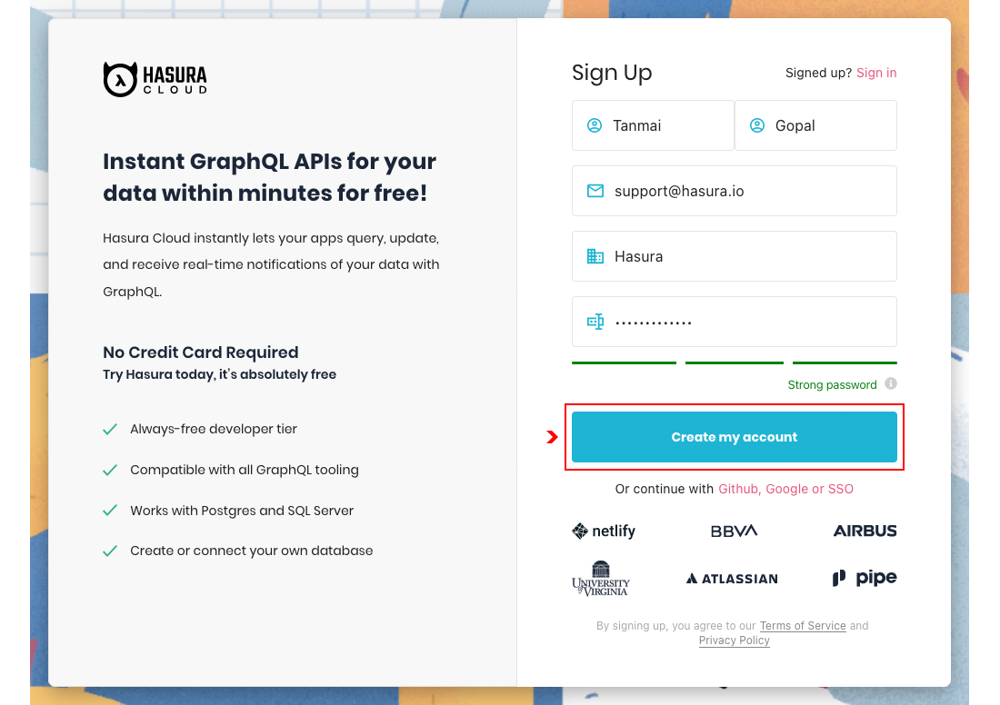
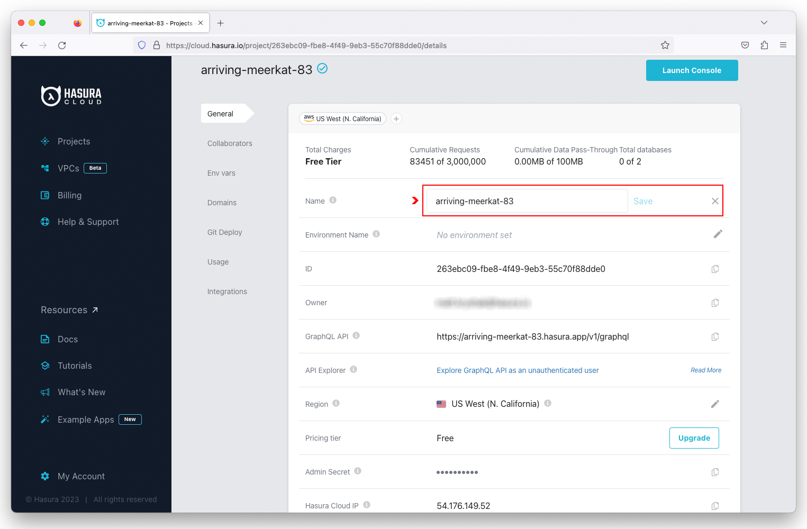
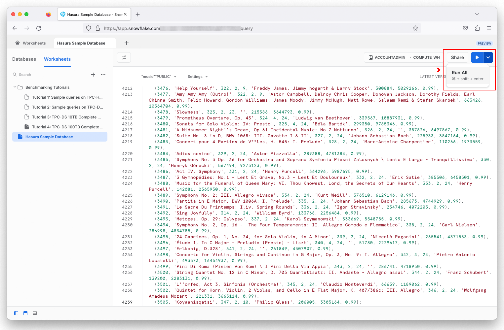
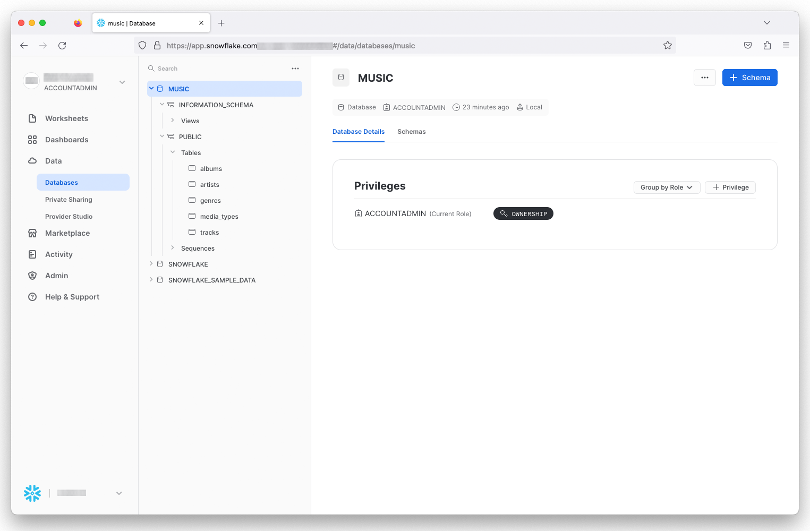
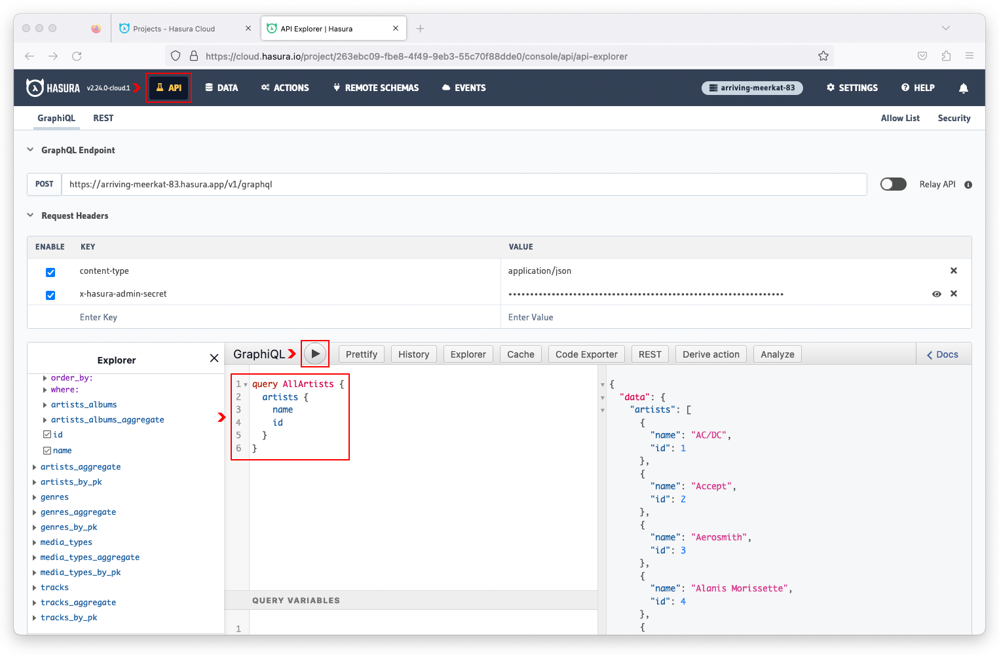

The Hasura GraphQL Engine is a blazingly-fast GraphQL server that allows developers to instantly build and deploy real-time GraphQL and REST APIs on top of any new or existing Snowflake database.
In this tutorial, you will learn how to use Hasura Cloud to connect to your Snowflake database and query your data using GraphQL.

Prerequisites
- A Snowflake account with an accessible warehouse and role to create a new database and schema
What You'll Learn
- How to create and configure an Hasura Cloud project
- How to connect Hasura Cloud to a Snowflake database
- How to query data in your Snowflake database using GraphQL
What You'll Need
- A valid email address to create an Hasura Cloud account
What You'll Build
- A GraphQL API for your Snowflake database
Navigate to

Complete the sign up form and click on the Create My Account button.

Check your inbox for a verifcation email to confirm your account. If you did not receive an email, scan your spam/junk folder or request another verification email.
In the Hasura Cloud dashboard, click on the New Project button.

Select Free from the pricing plans, pick an AWS region from the drop-down menu, and click on the Create Free Project button to create a project.

Click on the  icon for the project you want to configure.
icon for the project you want to configure.

Click on the  icon to the right of the
icon to the right of the Name field. Enter a globally unique project name and click on Save.

Additional information worth noting on the configuration page includes:
- GraphQL API Endpoint
- Admin Secret
- Hasura Cloud IP Address
Sign in to your Snowflake account and create a new SQL Worksheet.

Copy the

After the script has successfully executed, you will see a MUSIC database with the following tables:

In the Hasura Cloud dashboard, click on the Launch Console for your project.

Click on Data in the navigation bar and select Snowflake as the database type. Click on the Connect Existing Database button to configure the Snowflake connector.

Enter music as the database name, followed by your JDBC connection string.

The Snowflake JDBC connection string uses the following format:
Format:
jdbc:snowflake://{organization}-{account}.snowflakecomputing.com/?user={username}&password={password}&warehouse={warehouse_name}&db={db_name}&schema={schema_name}
Example:
jdbc:snowflake://RLTEPEF-LKR90823.snowflakecomputing.com/?user=hasura&password=Hasura%2123&warehouse=compute_wh&db=music&schema=public
On the left side of the Hasura Cloud console, click on the music database and select all of the tables. Click on the Track Selected button to enable Hasura to track all of the database tables and instantly create a GraphQL API.

With the auto-generated GraphQL API, you can now query for non-related data.

Click on the  to expand the
to expand the Foreign Key Relationships and select all of the suggested relationships. Hasura automatically discovers table relationships by introspecting the schema. Click on the Track Selected button to re-generate the GraphQL API.

You are now able to query for all related data (i.e. nested query).

Click on the API button in the navigation bar. In the GraphiQL Explorer, paste the AllArtists query to retrieve the name and id of all artists.
query AllArtists {
artists {
name
id
}
}
Execute the query by clicking on the Play button. The results will be displayed in the box to the right of the query.

Now let's query for both artists and their respective albums. In the GraphiQL Explorer, paste the AllArtistsAlbums query and execute it.
query AllArtistsAlbums {
artists {
name
id
artists_albums {
title
artist_id
}
}
}
This is a nested query that fetches artist and album information based on the related id of the artist and artist_id of the album.

Using a variable, we can narrow the results for a specific artist. In the GraphiQL Explorer, paste the ArtistAlbums query that contains a filter using the $artist variable.
query ArtistAlbums($artist: string!) {
artists(where: {name: {_eq: $artist}}) {
name
artists_albums {
title
}
}
}
In the Query Variables box, paste the JSON string to set the $artist variable to Green Day.
{
"artist": "Green Day"
}
Execute the query and now the results are filtered for albums belong to the artist Green Day.

Congratulations! You've just deployed a GraphQL API for your Snowflake database in less than 20 minutes! And by doing so, you've discovered how easily Hasura can accelerate your application development on Snowflake by providing a fast way to create and deploy real-time GraphQL (and REST) APIs on top of your new or existing Snowflake databases.
What we did not cover in this Quickstart is Hasura's robust and flexible authorization engine that enables fine-grained access controls for your Snowflake databases. This will be a topic of a future Quickstart.
Hasura requires minimal setup and configuration, making it an ideal solution for any developer who wants to quickly fetch Snowflake data in a uniform and consistent manner without having to be a database or SQL expert.
What You've Learned
- How to connect Hasura to your Snowflake database with automatic schema introspection.
- How to use Hasura to instantly create a GraphQL API for your Snowflake data.
- How to execute GraphQL queries, including nested queries with variables.